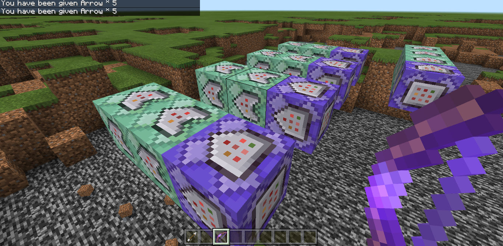

Multiple commands can be put together for powerful results
It is possible to put together a complex series of events by chaining command blocks together. Settings can be changed to make them loop repeatedly or only activate under certain circumstances. There are three basic types of command blocks: normal (pink), repeating (purple), and conditional (green).

Repeating command blocks appear purple. They repeat the command at a given interval known as a tick. Each tick is equal to 1/20th of a second. So if delay in ticks is set to 20, the command will execute once a second. 200 will be every 10 seconds.
Beware that more executions with complex commands can lag your game. You also have to avoid infinite loops with some commands. For example you can't have TNT summon TNT or it would create a chain reaction of infinite TNT. If this happens you will have to force quit Minecraft, and you will have to disable command blocks in your setting before reloading the map.
Command blocks can be put together to form a series of commands. A chain starts with either a normal (pink) command block or a repeating command block (purple). You can then attach a chain command block (green) to it.
Notice that command blocks have directional arrows on each side. Command blocks in a chain will only activate in the direction of the arrows. You can set the "execute on first tick" property to off and change the "delay in ticks" property to create a pause between blocks.
Conditional command blocks only execute if the command block pointing to it executed its command successfully. When a command block is set to conditional, the back end of the arrow changes to being concave. The conditional command blocks can act as if statement inside a loop.
For example, two command blocks can be chained together to detect if a structure has been destroyed, and replace it if it has been.
This video shows a map called TNT Fight. Players on a giant block try to blow each other up by shooting a ceiling made of TNT. The map includes repeating command blocks that try to fill certain blocks under the playing surface. When the playing surface gets blown up so far deep, these command blocks can execute and then trigger conditional command blocks to reset the playing surface and respawn all players. You can download the map here.
Conditional command blocks can often be used with the /testfor command. It checks for a set of circumstances and if that condition is true, then the following conditional command block can execute. For example:
If command blocks cause Minecraft to freeze, force quit the game, and you might have to disable command blocks in your setting before reloading the map.